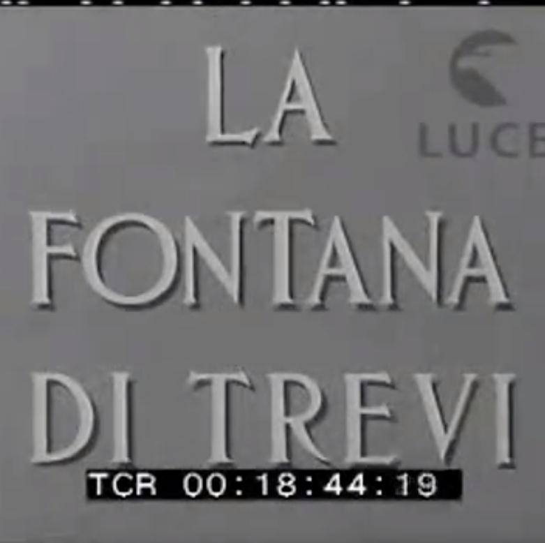
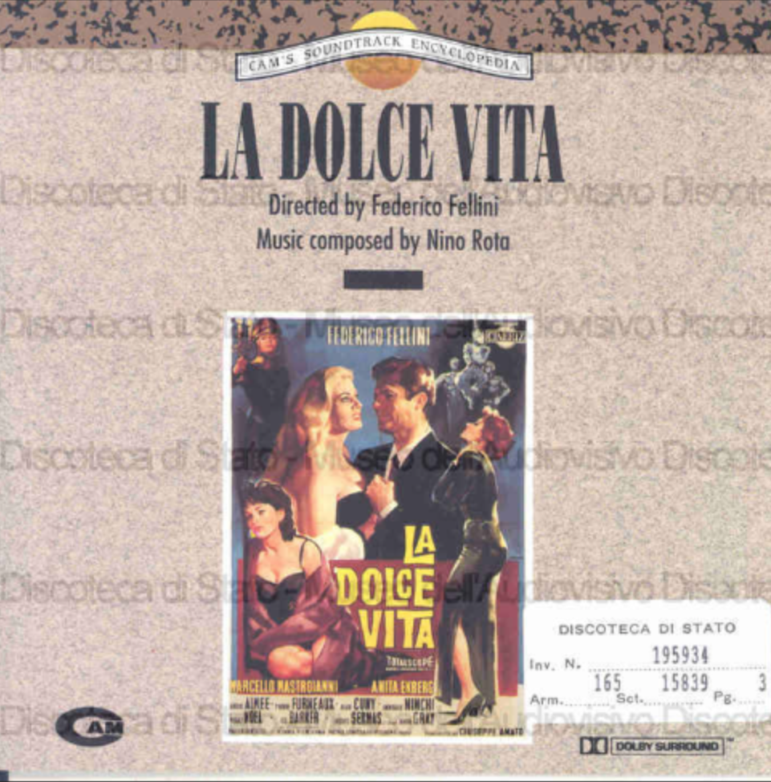
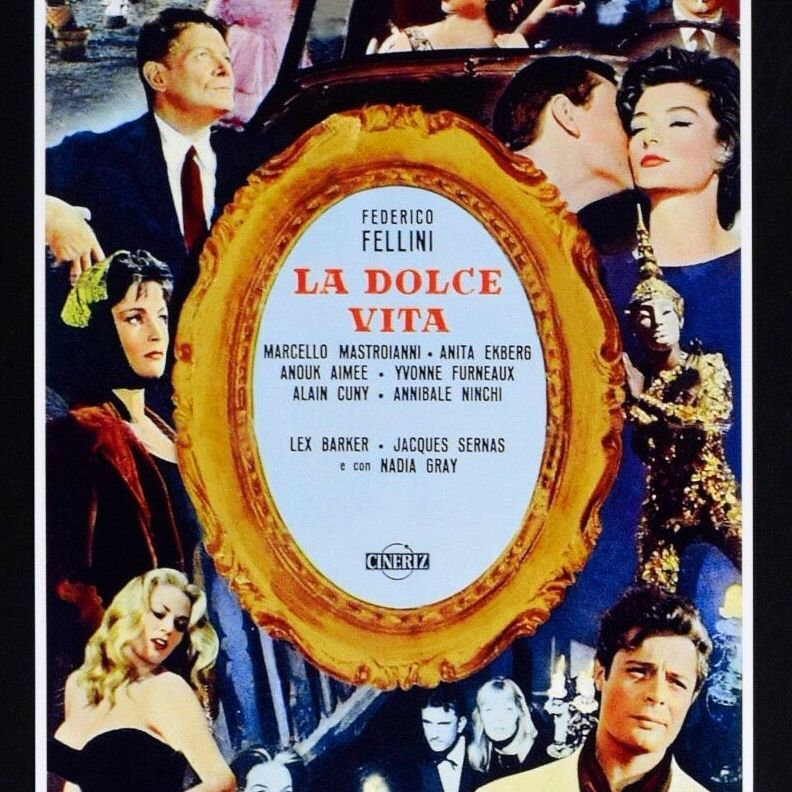

Items

La fontana di Trevi
Video Documentary

La dolce vita (soundtrack) by Nino Rota
Soundtrack
La Dolce Vita (movie)
DVD
Fellini portrait
Video Documentary

La Dolce Vita - Manifesto
Playbill
Nella città delle donne: femminile e sogno nel cinema di Federico Fellini
Book
Anita Ekberg and Marcello Mastroianni in the Trevi Fountain
Photograph
Fellini e la Palma d'Oro ricevuta per "La Dolce Vita"
Photograph
Pretino
Costume